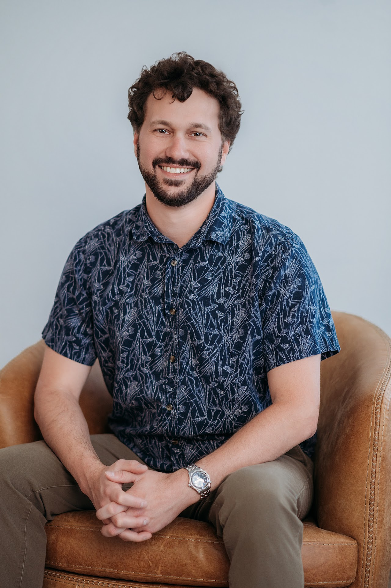

Founder + President
Nick Ducote
Nicholas ("Nick") Ducote is the founder and president of Ducote Consulting LLC, a firm dedicated to helping rural communities in Eastern Oregon secure and manage critical funding for infrastructure and community development. After working with J-U-B Engineers in La Grande as a Funding Specialist and technical writer, Nick started Ducote Consulting in 2016 to expand grant and funding-related services in the region. Since then, the Ducote Consulting team has written and administered more than $55 million in grants and loans, including over $20 million in Community Development Block Grant (CDBG) projects.
Nick's expertise spans grant administration, NEPA environmental review, and labor standards compliance, with a proven record of guiding projects from initial funding applications through construction and closeout. He works directly with cities, special districts, nonprofits, and other entities to implement capital projects ranging from water and wastewater systems, public facilities, parks, emergency services, and community infrastructure. He holds an M.A. in History and a B.A. in Political Science from Louisiana Tech University.
Grounded in a commitment to practical problem-solving and long-term partnerships, Nick has built Ducote Consulting into a trusted resource for rural Oregon communities navigating the complexities of federal and state funding.